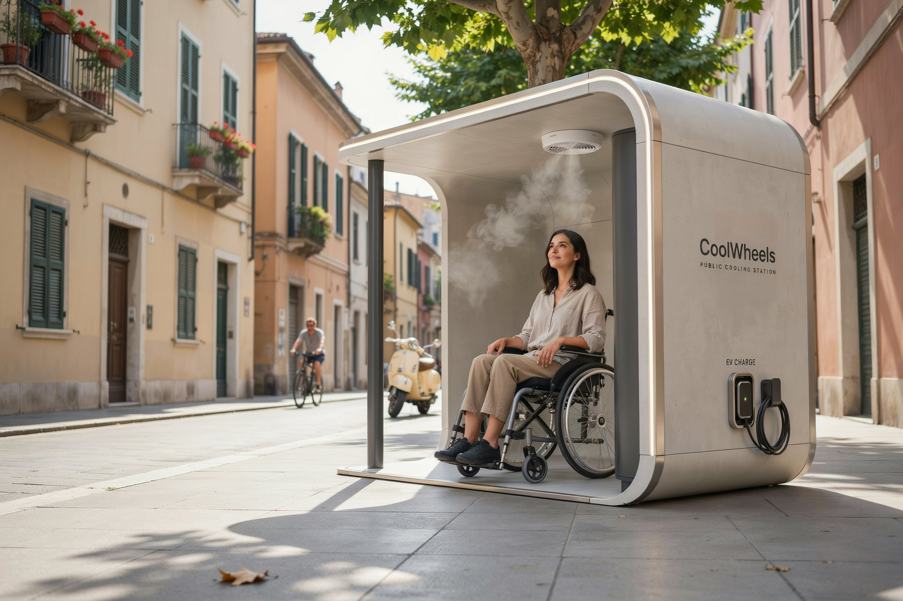

Solar-powered public cooling stations built for wheelchair users — shade, misting, and charging, right where the heat hits hardest.
I'd use this / I want to help pilot itElectric wheelchair batteries and joystick controllers overheat and drain faster in direct sun. Existing shaded rest spots are often unreachable — blocked by curbs, spaced too far apart, or simply not built with wheelchair access in mind. That turns an ordinary hot day into a real barrier to getting around independently.
A shaded pod with an active misting fan gives immediate relief from direct sun — no waiting for shade to pass overhead, no detour to find a tree.
An insulated outlet built for electric wheelchairs and mobility aids, so heat-driven battery drain doesn't strand anyone mid-route.
Rooftop solar panels power the misting fan and charging outlet directly — no grid connection needed, and near-zero running cost for the city.
Unlocked with an existing municipal accessibility credential (like AustriaID or CityGraz), so the pod stays available for the people who need it most.
A Plus tier extends the same pod for longer stays — useful near transit hubs and busy squares where people naturally spend more time.
| Tier | Includes | Best placed at |
|---|---|---|
| Standard | Shade, misting, wheelchair charging, solar power | Residential streets, parks, everyday routes |
| Plus | Standard + device charging + fold-down desk + Wi-Fi | Transit hubs, squares, high-dwell locations |
Identify the most-used wheelchair routes through resident input and mobility data.
Work with a fabricator on a cost-conscious pilot unit, sized for a single high-traffic location.
Distribute accessibility-key access through the municipality and apply for climate-adaptation subsidy funding.
Track usage, dwell time, and user-reported comfort and safety.
Use pilot results to plan further installations or introduce a minimal, insurance-covered user fee.
We're a student team piloting CoolWheels as part of the Cooling Europe Deep Dive Intensive. If you use a wheelchair or mobility aid, work in disability services, or are involved in municipal climate planning, we'd like to hear from you.
This is a validation page for a course project, not a live product. Feedback goes straight into our Tally form above.